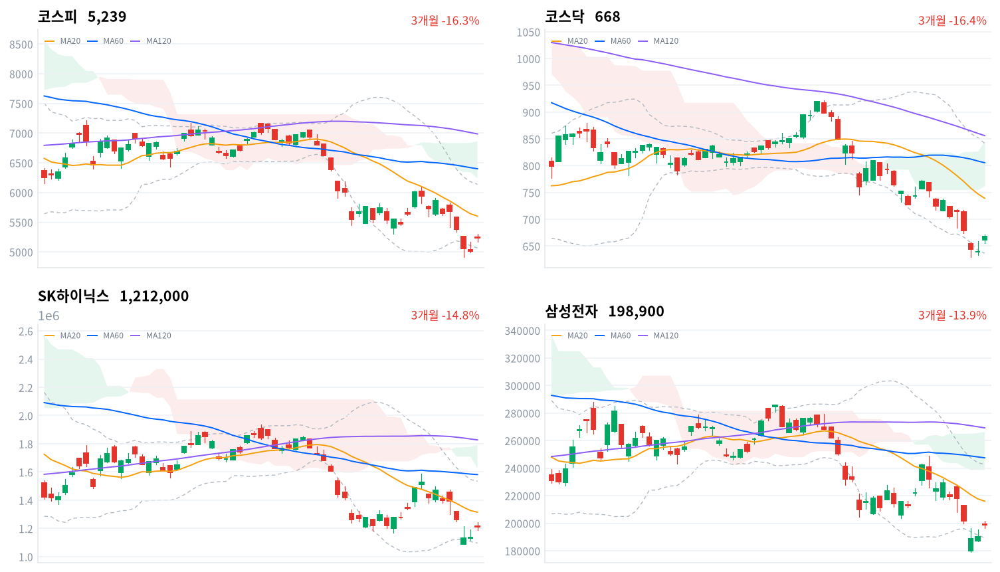

미국 반도체 반등과 유가 급락 다음 날 코스피는 아시아 네 지수 평균보다 2.91%포인트 더 올랐다. 외국인은 4,143억원을 순매수해(당일 잠정) 7거래일 연속 순매도를 멈췄다.
상승의 대부분이 개장 갭에서 나와, 한국만 더 팔던 외국인 매도가 끝났는지는 아직 판단하지 않는다. 11월 11일 외국인 순매수가 이어지는지를 기다린다.
11월 9일 미국 세션의 반도체 반등과 유가 급락이 이번에는 한국에 그대로 옮겨 왔다. 전날 미국 반등을 거의 따라가지 못했던 코스피가 이날은 아시아 네 지수 평균보다 2.91%포인트 더 올랐다. 외국인은 코스피에서 4,143억원을 순매수해(당일 잠정) 7거래일 연속 순매도를 멈췄고, 상승은 반도체만이 아니라 항공·전력기기·기계로 넓게 퍼졌다.
장 마감 뒤 보도는 급등을 필라델피아 반도체지수 급등과 미·이란 협상 기대에 따른 유가 하락으로 설명했다. 그 설명에 동의한다. 다만 그 설명은 미국 재료가 하루 동안 옮겨 왔다는 것까지만 말하고, 7거래일 동안 한국 주식을 판 외국인 매도가 끝났는지는 답하지 않는다. 같은 날 모건스탠리가 삼성전자와 SK하이닉스의 목표주가를 낮췄다는 보도가 나왔는데도 두 종목이 크게 올라, 이날 가격은 증권사 의견보다 미국 반도체의 방향을 따랐다. 키움증권 한지영 연구원은 젠슨 황 관련 논란이 엔비디아 밖 반도체·AI주로 번지지 않았다고 보고, 시장이 AI 투자 사이클과 CEO 위험을 구분하고 있다고 진단했다.
11월 5~9일 코스피 낙폭이 아시아보다 컸던 만큼 되돌림도 컸을 뿐이라는 설명도 가능하다. 그러나 외국인이 순매수로 돌아섰고 반도체 업종 대부분의 종목이 함께 오른 날이라, 한국 고유의 매도 압력이 소진되기 시작했다는 설명을 우선 설명으로 본다. 외국인 순매수는 하루치 잠정치이고 업종별 순매매 자료가 없어, 외국인이 반도체를 샀는지는 가리지 못한다. 두 설명은 미국 반도체 재료가 약한 날에도 외국인 순매수와 아시아 대비 우위가 이어지는지로 구분된다.
새로 제안할 상품은 없다. 반도체·AI 하드웨어 테마는 한국 대형주가 미국 반등을 따라가 가격 흐름이 회복됐지만, 모건스탠리의 목표주가 하향이 같은 날 나와 근거가 한쪽으로만 쌓이지는 않았다. 하루 4% 넘는 상승이 개장 갭에서 거의 다 나왔고 장중에는 더 오르지 못해, 이 반등만으로 추세가 바뀌었다고 보기는 이르다. 항공주 급등은 아직 체결되지 않은 협상과 아직 비용에 들어오지 않은 유가 하락을 앞당겨 반영한 것으로 본다. 가장 가까운 결정적 일정은 11월 11일 정규장의 외국인 코스피 순매수 방향이다.
코스피가 11월 10일 기준 볼린저 밴드 하단 5,067 아래에서 마감하면, 외국인 매도가 소진되기 시작했다는 오늘 판단을 철회한다. 그 경우 이날 급등을 미국 재료에 기댄 하루 되돌림으로 보고, 한국 고유의 매도 압력이 이어진다는 설명을 우선 설명으로 본다.
출처: 헤럴드경제, 한국경제TV, 뉴스1
11월 9일 미국 세션에서 나스닥은 2.74%, S&P500은 2.35%, 다우는 2.15% 올랐다. 11월 5일 급락 뒤 저가 매수가 들어와 필라델피아 반도체지수가 6.85% 올랐고, 엔비디아는 젠슨 황 CEO 관련 논란으로 4%대 내렸다는 보도가 나왔다. 트럼프 대통령이 이란 분쟁 종식에 긍정적인 흐름을 언급하자 브렌트유는 5.85% 내린 배럴당 92.57달러가 됐다는 보도도 있었다. 아시아에서는 닛케이(+2.87%)와 대만가권(+2.52%)이 크게 오르고 항셍(+0.44%)과 상해종합(+0.08%)은 소폭 올랐다. 코스피는 네 지수 평균(+1.48%)보다 2.91%포인트 앞섰다.
코스피는 전일 종가 5,018.85보다 4.55% 높은 5,247.22에서 출발했다. 한국 정규장 동안 S&P500 선물은 0.14% 오르고 나스닥 선물은 0.26% 내려, 장중에 미국 쪽에서 더해진 동력은 없었다.
코스피는 장 초반 5,301까지 오른 뒤 5,175까지 밀렸다가 하루 범위의 한가운데쯤에서 마감했고, 종가는 시가보다 낮았다. 코스닥은 655~672 범위의 위쪽 4분의 1에서 끝났다. 원화는 장중 강해졌다.
미국 반도체 반등과 유가 하락이 개장 시점에 한 번에 반영된 날이다. 반도체 대형주와 함께 유가 수혜인 항공, 직전 2거래일 급락했던 전력기기가 크게 올랐고 제약만 약했다. 외국인과 기관이 함께 사고 개인이 팔았다. 장중 투자자별 흐름과 시간외 거래 자료는 없다.
출처: 헤럴드경제, 블루밍비트, 프리진경제, 한국경제TV
두 지수가 비슷한 폭으로 올랐다. 코스피는 4.39% 오른 5,239, 코스닥은 4.48% 오른 667.61로 마감했다. 코스피는 20일 이동평균(5,603)보다 여전히 6% 넘게 낮아, 하루 급등이 최근 한 달 낙폭을 되돌린 것은 아니다.
| 지수 | 종가 | 등락률 | 시가 | 고가 | 저가 | 전일 종가 |
|---|---|---|---|---|---|---|
| 코스피 | 5,239.13 | +4.39% | 5,247.22 | 5,300.92 | 5,174.55 | 5,018.85 |
| 코스닥 | 667.61 | +4.48% | 661.73 | 671.91 | 655.09 | 638.97 |
| 주체 | 순매수(억원) |
|---|---|
| 개인 | -13,672 |
| 외국인 | +4,143 |
| 기관 | +4,643 |
| 주체 | 순매수(억원) |
|---|---|
| 개인 | -561 |
| 외국인 | -1,477 |
| 기관 | +2,150 |
외국인이 8거래일 만에 코스피를 샀다. 외국인은 4,143억원을 순매수했고(전일 5,256억원 순매도, 당일 잠정), 그 전 7거래일 동안 판 금액은 12조5,489억원이다. 기관도 4,643억원(전일 7,535억원)을 순매수했고, 개인은 1조3,672억원을 순매도해(전일 6,886억원 순매도) 상승을 판 쪽이었다. 다만 이날 순매수 규모는 앞선 7거래일 순매도 합계의 3%에 그친다.
코스닥에서는 외국인이 1,477억원을 팔아 코스피와 방향이 달랐고, 기관이 2,150억원을 사서 지수를 받쳤다. 전일 값은 이날 다시 받은 잠정치라 지난 글의 값(외국인 6,229억원 순매도)과 다르다.
장중 누적 수급과 프로그램 매매는 받을 수 있는 자료가 없어 싣지 않는다.
| 순위 | 종목/ETF | 구분 | 거래대금 | 비고 |
|---|---|---|---|---|
| 1 | SK하이닉스 | 개별주 | 4.05조원 | - |
| 2 | 삼성전자 | 개별주 | 2.96조원 | - |
| 3 | 반도체 테마 ETF | 테마·롱 | 1.59조원 | 29종 합산 |
| 4 | 삼성전기 | 개별주 | 0.59조원 | - |
| 5 | 삼성전자우 | 개별주 | 0.47조원 | - |
| 6 | SK스퀘어 | 개별주 | 0.47조원 | - |
| 7 | KODEX CD금리액티브(합성) | 단기금리·현금성 | 0.45조원 | - |
| 8 | 삼성SDI | 개별주 | 0.33조원 | - |
| 9 | 2차전지 테마 ETF | 테마·롱 | 0.29조원 | 14종 합산 |
| 10 | 한진칼 | 개별주 | 0.29조원 | - |
단위 백만원 원본을 조 단위로 환산했다. 같은 기초자산 ETF는 방향별로, 같은 테마 섹터 ETF는 테마별로 묶고 지수·해외 ETF는 제외했다.
거래는 여전히 반도체 두 종목에 몰렸고, 이번에는 주가도 거래를 따라 올랐다. SK하이닉스(4.05조원)와 삼성전자(2.96조원)가 상위 10개 합계의 61%를 차지했고, 반도체 테마 ETF 29종 합산(1.59조원)이 3위였다. 전날 거래가 몰리고도 1% 안쪽으로 오르는 데 그쳤던 두 종목이 이날은 각각 6.69%, 4.74% 올랐다.
반도체 밖에서는 한진칼이 0.29조원으로 10위에 들어, 항공주 급등에 거래도 함께 붙었다. 단일종목 레버리지 ETF는 상위 10개에서 빠졌다.
12개 섹터가 모두 올랐다. 대표 ETF 기준으로 건설(+7.95%)·반도체(+6.44%)·2차전지(+6.40%)·조선(+5.57%)·방산(+5.48%)이 크게 올랐고, 헬스케어(+0.40%)와 은행(+0.64%)만 1% 안쪽이었다. 1주 기준으로는 반도체(-10.03%)가 여전히 가장 약해, 하루 반등이 한 주 낙폭을 다 되돌리지는 못했다.
업종 단위에서도 상승은 넓었다. 반도체와반도체장비(+5.51%)는 174종목 가운데 163종목이 올랐고, 항공사(+12.70%)는 9종목 가운데 8종목, 전기장비(+9.62%)는 35종목 가운데 31종목, 기계(+6.87%)는 106종목 가운데 93종목이 함께 올랐다. 건설(+6.94%)은 76종목 가운데 58종목이 올랐지만 거래대금이 받쳐 주지 않아 몇몇 종목이 끈 상승에 가깝다.
반도체 대형주가 미국 반등을 따라 크게 올랐다(SK하이닉스 +6.69%, 삼성전자 +4.74%, 한미반도체 +7.90%, SK스퀘어 +5.26%). 미국 필라델피아 반도체지수 급등과 AI 투자가 이어진다는 기대가 배경으로 보도됐다. 같은 날 모건스탠리가 삼성전자 목표주가를 38만1000원에서 30만9000원으로, SK하이닉스는 260만원에서 160만원으로 낮추면서 투자의견은 그대로 뒀다는 보도가 나왔다. SK하이닉스는 앞선 4거래일 하락분을 다 되찾지는 못했다. 모건스탠리가 메모리 보고서에서 SK하이닉스의 2029~2035년 D램 영업이익률 가정을 60%에서 32%로 낮췄다는 소식을 두고, 메모리 업계 경쟁이 과열되는 '치킨게임'이 시작됐다는 시각도 나왔다.
제약 대형주는 지수와 반대로 내렸다(셀트리온 -3.33%, 삼성바이오로직스 -2.78%). 확인된 재료는 없다.
항공주가 일제히 급등했다(진에어 +29.92%, 한진칼 +15.18%, 대한항공 +11.51%). 진에어는 상한가였고 대한항공우는 2거래일 연속 상한가로 마감했다. 미·이란 긴장 완화 기대로 국제유가가 급락한 것과 통합 시너지가 이유로 보도됐다. 유류비는 항공사 비용의 30% 안팎이지만 실제 항공유 비용에 반영되기까지는 시차가 있다는 보도도 나왔다.
삼성SDI가 9.88% 올라 전날 급락분의 대부분을 되찾았다. 전력기기·ESS주와 함께 반등했다는 보도가 나왔고, 회사 고유의 새 공시는 확인되지 않았다.
전력기기주가 2거래일 급락 뒤 크게 반등했다(효성중공업 +12.72%, HD현대일렉트릭 +10.67%, LS ELECTRIC +8.33%). 11월 5~6일 미국 데이터센터 인허가 강화 우려로 효성중공업이 2거래일간 23.04%, LS ELECTRIC이 22.69% 빠진 뒤였다. 증권가에서는 이미 착공·인허가를 확보한 물량은 취소·지연 가능성이 제한적이고, 미국 노후 전력망 교체 수요는 데이터센터 일정과 별개라는 평가가 나왔다는 보도가 있었다.
묶음 밖에서는 NHN(+29.87%)이 상한가로 마감했다. 3분기 영업이익이 588억원으로 112.7% 늘고 매출이 7,583억원으로 분기 최대를 기록했으며, 100MW 규모 AI 데이터센터 계획을 밝혔다는 보도가 나왔다. 한화투자증권은 목표주가를 9만3천원으로 올렸다. 아시아나IDT(+26.47%)와 LIG디펜스앤에어로스페이스(+14.14%), 현대건설(+11.97%)도 크게 올랐지만 확인된 재료는 없다.
출처: 헤럴드경제, 뉴스웨이, 머니투데이, 뉴스1, 한국경제TV, 네이트 뉴스, 파이낸셜뉴스, 이투데이, 뉴스핌, 한국경제
주식이 4% 넘게 오른 날 국고채 금리는 거의 움직이지 않았다. 국고채 3년물은 0.6bp 내린 3.633%, 10년물은 1.3bp 내린 3.85%로 마감했다. 원/달러는 서울 외환시장 주간 종가 기준 9.6원 내린 1,337.5원으로 마감했다는 보도가 나왔다.
| 지표 | 금리 | 전일比(bp) | 기준일 |
|---|---|---|---|
| 국고채 3년 | 3.633% | -0.6 | 2026-11-10 |
| 국고채 10년 | 3.85% | -1.3 | 2026-11-10 |
| CD 91일 | 3.37% | +1.0 | 2026-11-10 |
| 회사채 AA- 3년 | 4.327% | -0.5 | 2026-11-10 |
| 한국은행 기준금리 | 3.00% | 0.0 | 2026년 10월 기준 |
신용 금리차는 주식 급반등에도 좁혀지지 않았다. 회사채 AA- 3년물과 국고채 3년물의 금리차는 69.4bp로 0.1bp 넓어졌고, 최근 2년(532거래일) 가운데 이보다 넓었던 날이 30일뿐이다. 10년물과 3년물의 금리차는 21.7bp로 0.7bp 좁혀져 최근 2년(532거래일) 가운데 좁은 쪽 21% 안에 머물렀다. 원화 강세는 미·이란 협상 기대와 기술주 반등, 외국인 매도 압력 약화가 겹친 결과로 보도됐다.
출처: 서울경제
| 미국 참조 지수 | 구분 | 관측 | 등락률 | 업종 내 상승 비율 | 기준일 |
|---|---|---|---|---|---|
| 반도체·AI 하드웨어 | 업종 | 반도체와반도체장비 | +5.51% | 94% | 11/10 |
| 반도체·AI 하드웨어 | 종목 | SK하이닉스 | +6.69% | – | 11/10 |
| 반도체·AI 하드웨어 | 종목 | 삼성전자 | +4.74% | – | 11/10 |
| 반도체·AI 하드웨어 | 지수 | 대만가권 | +2.52% | – | 11/10 |
| 전력망 | 업종 | 전기장비 | +9.62% | 89% | 11/10 |
| 전력망 | 업종 | 전기제품 | +5.49% | 87% | 11/10 |
| 전력망 | 종목 | HD현대일렉트릭 | +10.67% | – | 11/10 |
| 전력망 | 종목 | LS ELECTRIC | +8.33% | – | 11/10 |
| 전력망 | 종목 | 효성중공업 | +12.72% | – | 11/10 |
| 방산 | 업종 | 우주항공과국방 | +4.82% | 91% | 11/10 |
| 방산 | 종목 | 한화에어로스페이스 | +3.13% | – | 11/10 |
| 방산 | 종목 | LIG디펜스앤에어로스페이스 | +14.14% | – | 11/10 |
| 산업재 | 업종 | 기계 | +6.87% | 88% | 11/10 |
| 산업재 | 업종 | 조선 | +4.54% | 90% | 11/10 |
| 산업재 | 종목 | HD현대중공업 | +3.88% | – | 11/10 |
| 산업재 | 종목 | 삼성중공업 | +7.38% | – | 11/10 |
| 금속·광업 | 업종 | 철강 | +3.67% | 80% | 11/10 |
| 금속·광업 | 업종 | 비철금속 | +2.68% | 82% | 11/10 |
| 금속·광업 | 종목 | POSCO홀딩스 | +4.63% | – | 11/10 |
| 금융 | 업종 | 은행 | +1.13% | 82% | 11/10 |
| 금융 | 업종 | 증권 | +1.86% | 85% | 11/10 |
| 금융 | 종목 | KB금융 | +1.19% | – | 11/10 |
| 금융 | 종목 | 신한지주 | -0.35% | – | 11/10 |
| 소프트웨어 | 업종 | 소프트웨어 | +2.33% | 75% | 11/10 |
| 소프트웨어 | 업종 | IT서비스 | +5.81% | 83% | 11/10 |
| 소프트웨어 | 종목 | NAVER | +3.15% | – | 11/10 |
| 소프트웨어 | 종목 | 카카오 | -0.16% | – | 11/10 |
| 에너지 | 업종 | 석유와가스 | +4.14% | 74% | 11/10 |
| 에너지 | 종목 | SK이노베이션 | +2.81% | – | 11/10 |
| 일본 | 지수 | 닛케이 | +2.87% | – | 11/10 |
| 중국 | 지수 | 항셍 | +0.44% | – | 11/10 |
| 중국 | 지수 | 상해종합 | +0.08% | – | 11/10 |
해외주식 펀드의 대기 자금이 달러를 사는 비용은 이날 오전보다 낮아졌다. 원/달러가 한국장 시간대 고점 1,347.6원(11:30)에서 마지막 관측 1,337.1원까지 내려, 외국인이 한국 주식을 다시 산 날 원화가 함께 강해졌다. 원화 강세는 이미 보유한 해외주식의 원화 환산 가치를 낮추는 방향이다.
전력망 테마에서 한국 전력기기주는 미국 데이터센터 인허가 강화 우려로 빠졌던 2거래일 낙폭의 상당 부분을 하루 만에 되찾았다. 전기장비 업종이 9.62% 오르고 HD현대일렉트릭(+10.67%)·효성중공업(+12.72%)이 반도체 대형주보다 크게 올라, 이날 아시아 시간대의 전력망 관련주 반응은 AI 반도체보다 강했다. 미국 쪽 규제가 구체적인 법안이나 행정조치로 나오지 않은 상태라, 이 반등은 규제 우려가 이익 전망을 바꾸지 않았다는 해석과 같은 방향이다. 미국 정규장에서 전력 설비·데이터센터 전력 관련주가 함께 반등하는지가 이 반응이 한국만의 되돌림인지를 보여 준다.
트럼프 대통령이 11월 9일(현지) 이란 분쟁 종식에 긍정적인 흐름을 언급했고, 이날 브렌트유와 WTI가 함께 급락했다는 보도가 나왔다. 협상 문서나 합의 일정은 이날까지 확인되지 않았다.
유가가 내려가면 항공사는 연료비가, 화학사는 원료비가 줄고, 정유사는 보유 원유의 재고평가 이익이 줄어든다. 원화 강세도 항공사의 외화 부채와 연료 구매 부담을 낮춘다. 이날 항공주는 이 경로대로 급등했다. 정유는 유가 부담 쪽 업종인데도 석유와가스 업종이 4.14% 올라 이날 가격은 그 경로와 엇갈렸다. 다음 분기점은 협상의 문서화나 결렬 보도와 브렌트유의 방향이며, 일정은 미확정이다.
더불어민주당이 11월 10일 이른바 「주가 누르기 방지법」의 하위 법안인 상속·증여세법 개정안을 정기국회 안에 처리하겠다는 방침을 밝혔고, 적용 대상과 주식 평가 방식을 두고 당정이 이견을 조율 중이라는 보도가 나왔다. 재정경제부는 상장주식 평가의 80% 하한이 시가주의에 어긋난다는 우려를 밝혀 왔다는 보도가 8월에 있었다.
상속세가 주가로 매겨지는 한 대주주에게는 주가를 낮게 두는 편이 유리하다. 평가 방식이 바뀌면 그 유인이 줄어 저PBR 지주사·금융주의 할인 폭이 좁혀질 여지가 있다. 이날 은행(+1.13%)과 증권(+1.86%)은 지수보다 덜 올라, 가격에 이 기대가 따로 반영됐는지는 판단을 유보한다. 다음 분기점은 기획재정위원회 조세소위원회 상정 여부이며 일정은 미확정이다.
안도걸 의원이 11월 9일 지방 주택 취득 시 양도세 감면을 넓히는 법안을 발의하는 등 여당에서 부동산 감세 법안이 잇따랐고, 대통령은 10일 국무회의에서 부동산 불법행위에 엄정 대응하라고 지시했다는 보도가 나왔다. 감세는 지방 주택 수요를 늘려 건설사의 분양 여건을 개선하는 쪽이다. 건설 업종은 6.94% 올랐지만 상승이 몇몇 종목에 몰렸고 이 법안을 원인으로 든 자료도 없어, 정책과 같은 방향이라는 데까지만 확인된다. 국회 상임위원회 심사 일정은 미확정이다.
출처: 헤럴드경제, 한국경제TV, KBS, 뉴스토마토, MTN, 서울경제
11월 9일 판단은 무효화됐다. 코스피가 11월 9일 기준 볼린저 밴드 하단 5,103 위인 5,239.13에서 마감해, 외국인 매도가 이어지는 동안 반등이 종가로 지켜지지 않는다는 판단을 철회한다. 기다린 두 조건이 모두 판단 반대쪽으로 나왔다. 외국인은 4,143억원을 순매수했고(당일 잠정), 코스피는 5,103을 136포인트 웃돌았다. 잘못 본 것은 한국 대형주가 11월 6일 미국 반등을 따라가지 못한 모습을 한국 고유의 위험 축소가 계속된다는 증거로 읽은 점이다. 하루 뒤 더 큰 미국 반등이 오자 코스피는 아시아보다 더 올랐다.
| 판단(세운 날) | 오늘 결과 | 상태 |
|---|---|---|
| 항공주 급등은 협상 기대의 선반영(11월 10일) | 대한항공 32,450원(+11.51%) | 새로 세움 — 11월 17일 종가 |
| 정유주 급락은 협상 타결 기대의 선반영(11월 3일) | S-Oil 비교값 없음, 코스피 -7.25% | 판단 보류 — 11월 10일로 닫음 |
| 친환경주 급등은 하루 테마 매수(11월 4일) | 한화솔루션−코스피 -5.03%포인트 | 뒷받침 — 11월 11일 종가 |
| 삼성전기 급락은 부품 체인 위험 축소의 과잉(11월 5일) | 삼성전기−코스피 -3.88%포인트 | 약화 — 11월 12일 종가 |
| 전력기기 급락은 위험 축소의 과잉(11월 6일) | 효성중공업−코스피 +7.17%포인트 | 뒷받침 — 11월 13일 종가 |
| 2차전지 급락은 정책 기대 매수의 청산(11월 9일) | 삼성SDI−코스피 +5.49%포인트 | 약화 — 11월 16일 종가 |
항공주 판단(11월 10일)은 오늘 세웠다. 출발점은 11월 10일 KRX 종가 대한항공 32,450원, 코스피 5,239.13이다. 11월 10일 KRX 종가 대비 11월 17일 KRX 종가 기준 대한항공 수익률이 코스피 수익률보다 3%포인트 넘게 낮으면 협상 기대 선반영 해석을 뒷받침한다. 같은 폭 넘게 높으면 이익 재평가를 더 설득력 있는 설명으로 보고 이 판단을 철회하며, 차이가 그 범위 안이면 어느 쪽으로도 판단하지 않고 닫는다. 그 사이 협상이 문서로 진전되면 유가 경로가 굳어져, 되돌림이 없다는 결과를 이익 재평가만으로 읽기 어려워진다.
정유주 판단(11월 3일)은 판정일인 이날 S-Oil 종가 비교값이 없어 어느 쪽으로도 판단하지 않고 닫았다. 코스피는 11월 3일 대비 7.25% 내렸고, 같은 업종의 SK이노베이션(+2.81%)은 다른 종목이라 S-Oil 판정을 대신하지 않는다.
전력기기 판단(11월 6일)은 뒷받침됐다. 효성중공업이 11월 6일 대비 10.72% 올라 코스피(+3.55%)보다 7.17%포인트 앞서 위험 축소 과잉 쪽 기준(+3%포인트)을 넘었다. 판정일은 11월 13일이고, 방향은 뒷받침됐지만 반도체·유가 재료와 함께 온 하루 반등이라 수주 전망이 그대로라는 이유까지 가리지는 못했다. 2차전지 판단(11월 9일)은 하루 만에 약해졌다. 삼성SDI가 9.88% 올라 코스피보다 5.49%포인트 앞서, 낙폭 과대 되돌림 쪽 기준(+3%포인트)을 넘었다. 친환경주 판단(11월 4일)은 한화솔루션이 이날 0.62% 오르는 데 그쳐 차이가 -5.03%포인트로 벌어지며 테마 매수 쪽 기준(-3%포인트)을 넘었다. 판정은 11월 11일 종가로 한다.
| 항목 | 계산 | 결과 |
|---|---|---|
| 코스피(11월 3일→11월 10일 종가) | (5,239.13 ÷ 5,648.79 − 1) × 100 | −7.25% |
| 한화솔루션 − 코스피(11월 4일→11월 10일 종가) | (24,400 ÷ 28,000 − 5,239.13 ÷ 5,683.80) × 100 | −5.03%포인트 |
| 삼성전기 − 코스피(11월 5일→11월 10일 종가) | (882,000 ÷ 944,000 − 5,239.13 ÷ 5,383.80) × 100 | −3.88%포인트 |
| 효성중공업 − 코스피(11월 6일→11월 10일 종가) | (1,746,000 ÷ 1,577,000 − 5,239.13 ÷ 5,059.69) × 100 | +7.17%포인트 |
| 삼성SDI − 코스피(11월 9일→11월 10일 종가) | (456,000 ÷ 415,000 − 5,239.13 ÷ 5,018.85) × 100 | +5.49%포인트 |
| 시점 | 확인할 것 | 가르는 판단 |
|---|---|---|
| 11월 11일 종가 | 외국인 코스피 순매수 방향·코스피 5,067 위 마감 | 매도 소진인가, 하루 되돌림인가 |
| 11월 11일 종가 | 한화솔루션−코스피 수익률 차(11월 4일 대비) | 테마 매수인가, 실적 재평가인가 |
| 11월 12일 종가 | 삼성전기−코스피 수익률 차(11월 5일 대비) | 부품주 과잉 매도인가 |
| 11월 13일 종가 | 효성중공업−코스피 수익률 차(11월 6일 대비) | 전력기기 과잉 매도인가, 수주 재평가인가 |
| 11월 16일 종가 | 삼성SDI−코스피 수익률 차(11월 9일 대비) | 기대 매수 청산인가, 낙폭 과대인가 |
| 11월 17일 종가 | 대한항공−코스피 수익률 차(11월 10일 대비) | 협상 기대 선반영인가, 이익 재평가인가 |
미·이란 협상의 문서화 여부와 ESS 제3차 중앙계약시장 낙찰 결과, 상속·증여세법 개정안의 조세소위원회 상정은 일정이 확정되지 않았다.

코스피·코스닥·SK하이닉스·삼성전자 3개월 일봉에 이동평균(20·60·120)·볼린저밴드·일목균형표 구름대를 겹쳐 그렸다. 상승 캔들은 녹색, 하락 캔들은 적색이다.
| 자산 | 위치(이평·구름) | 가까운 저항 | 가까운 지지 |
|---|---|---|---|
| 코스피 | 볼린저 밴드 안 복귀, 세 이동평균·구름 아래(역배열) | 전환선 5,506 → 20일선 5,603 | 볼린저 하단 5,067 → 20일 저점 4,911 |
| 코스닥 | 볼린저 밴드 안, 세 이동평균·구름 아래(역배열) | 전환선 699 | 볼린저 하단 637 → 20일 저점 629 |
| SK하이닉스 | 볼린저 밴드 안, 세 이동평균·구름 아래(역배열) | 20일선 132만원 | 볼린저 하단 110만원 |
| 삼성전자 | 볼린저 밴드 안, 세 이동평균·구름 아래(역배열) | 전환선 21만4천원 → 20일선 21만6천원 | 볼린저 하단 18만9천원 → 20일 저점 17만9천원 |
코스피는 2거래일 동안 볼린저 밴드 하단 아래에서 마감한 뒤 밴드 안으로 돌아왔지만, 세 이동평균과 구름 아래의 역배열은 그대로다. 아래로는 11월 10일 기준 밴드 하단 5,067이 가장 가까운 지지이고, 위로는 전환선 5,506을 종가로 넘는지가 첫 관문이다.
위 레벨은 이동평균·볼린저밴드·일목균형표와 스윙 고저를 11월 10일 종가로 기계적으로 계산한 값이며 투자 권유가 아니다. 종가에서 10% 넘게 떨어진 레벨은 싣지 않았다.